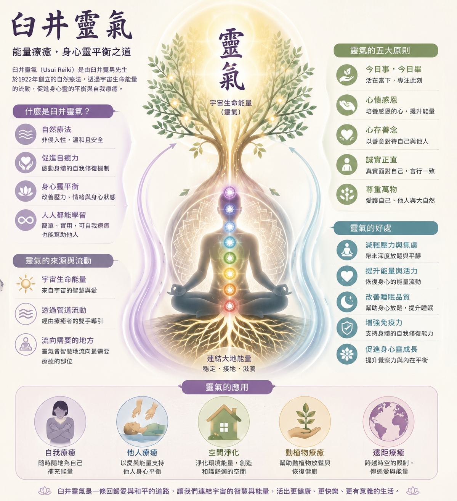

關於靈氣與自我療癒
Universal Life Force Energy & Holistic Healing Benefits
靈氣起源於日本臼井甕男（Mikao Usui）大師。「Rei (靈)」代表宇宙神聖智慧，而「Ki (氣)」指代生命之能。在 國際靈氣訓練中心（ICRT） 的學術定義中，靈氣指代「宇宙本源智慧引導的高頻生命能量」。它不附屬於任何宗教與門派，而是人人都可對接並共振的自然療癒能量，用以溫和地調幅身心，回歸完美和諧。
靈氣是一種運用雙手進行能量傳遞與平衡的療癒技術。It藉由宇宙高頻能量，協助人類補充匱乏、疏通淤塞或平衡過剩的能量，是一種能加速人體自癒能力的自然療法。
目前，靈氣療法已在全球廣泛普及。歐美許多大型醫療機構不僅將靈氣視為國家認可的輔助療法，並實際應用於臨床，讓靈氣成為現代少數受主流肯定的能量療法之一。在歐美，靈氣不僅在醫療體系中盛行，部分醫院已將其納入醫療服務，甚至有保險給付制度，更有護理學院將靈氣列入專業課程中。
靈氣能有效減輕醫療過程產生的副作用，緩解身心不適。在手術前，靈氣能幫助病患放鬆、消除緊張，以寧靜的心境迎接手術；術後，則能減輕病痛、縮短療程，進而加速癒合。在調整過程中，靈氣的波動會引導個案進入深層放鬆，優化身體自癒系統的運作。處於深度放鬆狀態時，自主神經系統會自然調節，進而降低血壓、平穩心跳，並釋放深層的緊張與焦慮；同時，這種狀態也能提升免疫系統功能，增強身體抵抗力。整個調整過程採取非侵入式，透過雙手隔空作用於個案的脈輪與氣場，不直接觸碰身體；個案僅需靜心平躺、閉目放鬆，即可接收宇宙能量。
從量子物理學的角度來看，靈氣的調整過程促進了細胞對宇宙生命能量的吸收，並同時釋放沉重、滯礙的能量。在這種「接收與釋放」的動態循環中，身體不僅展現了宇宙生命的流動，更進一步達成整體能量體系的平衡與和諧。
「靈氣是一種舒緩壓力與促進放鬆的技術，用以支持身體的自然療癒能力。靈氣是專業醫療護理的『輔助/互補品 (Complement)』，絕非『替代品 (Replacement)』。靈氣實踐者並非執業醫療保健提供者，我們強烈敦促個案始終尋求適當的心理與生理醫療專業協助。」
臼井靈氣・心靈架構圖

臼井靈氣架構資訊圖表（已優雅排版就緒）
請確認本目錄下存有「臼井靈氣_資訊圖表.png」以完整顯示
身體層面具體療癒
-
✓
協助身體放鬆，舒緩日常緊繃感
(透過靜心與能量練習，進入放鬆的狀態。) -
✓
支持身心平衡，提升自我覺察
(建立健康自我照顧習慣) -
✓
支持日常身心保養與能量維護。
(培養自我療癒意識) - ✓ 調養與休憩期間的身心支持工具
心理情緒深度釋放
- ✓ 提升情緒平衡與內在安定感
-
✓
支持培養正念與當下覺察。
(提升自我覺察與情緒理解) -
✓
協助鬆動舊有思維模式與信念框架
(如：我不夠好)
陪伴釋放不再適用的內在信念 - ✓ 幫助提升生活中的幸福感與滿足感
靈性成長自我實現
- ✓ 重建深度的內在安全感與宇宙連結
- ✓ 融解文化假我，自然彰顯人生藍圖
- ✓ 支持活出更貼近真實自我的狀態
- ✓ 擴展意識維度，體驗萬物合一
歷史源流：去神秘化的學術還原
Documented History & Research Reconstruction
臼井甕男 (Mikao Usui) 的開悟與誕生
在大正時期（1922年），臼井甕男先生於京都鞍馬山進行為期21天的斷食冥想修行。在最後一天，他體驗到強大的宇宙生命能量流經身心，因而開悟並發現了靈氣。隨後他在東京創設「臼井靈氣療法學會」，將這門慈悲的能量技術傳授給大眾。
林忠次郎 (Chujiro Hayashi) 將其結構化
作為退役的海軍軍醫，林忠次郎大師將原本偏向精神冥想修行的靈氣與醫學臨床相結合。他將靈氣轉化為更適合現代床位操作的系統，確立了全身手位規範與「靈授」技術，由多位療癒師共同施作，使其更容易被大眾理解與實踐。
高田哈瓦優 (Hawayo Takata) 與全球化
她是將靈氣從日本傳播到夏威夷及西方世界的第一人。在二戰前後的動盪時期，她通過改編歷史故事（使其更容易被西方基督教社會接受）與建立嚴格的收費及師資認證制度，成功在西方社會普及了靈氣，使其成為全球皆知的自療與舒壓體系。
William Lee Rand 與 ICRT 的歷史還原
國際靈氣訓練中心（ICRT）創辦人威廉·李·蘭德，通過大量的歷史文獻學術考證與實地走訪，還原了去神話化的、真實且客觀的靈氣歷史。他更在2014年引入了純淨高頻、去人為小我干擾的 Holy Fire® 聖火靈氣，推動了靈氣在現代的偉大演化與集體和平調頻。
核心價值：臼井五戒與內在修行
The Precepts & Mental Tuning
「招福之秘法，萬病之靈藥」
晨昏合掌，誠心默念。點擊卡片，查看五戒在現代生活中的心理調頻意涵：
怒るな
Ikaru na
關係與情緒界線
生氣是主權被小我侵犯時的防禦。不壓抑情緒，而是以聖火照亮憤怒底層被忽視的創傷，轉化為溫和的清明界線。
心配すな
Shinpai suna
臣服宇宙的慈悲
憂慮是試圖以大腦小我控制不確定性的幻覺。當下把掌控欲臣服給高維度宇宙生命流，深信每一步都有最好的恩寵指引。
感謝して
Kansha shite
同調富足振動頻率
感恩是跨越物質匱乏感、同調宇宙至高頻率的通關密鑰。當內心對眼前的微小事物升起純粹感恩，生命之流便會成倍擴張。
業を勵め
Gō wo hagame
靈魂契約的實踐
在塵世中的修行，不在深山野林，而在每一個當下。老實面對靈魂的成長課題，誠實、溫和地在家庭與職場中實踐真理。
人に親切に
Hito ni shinsetsu ni
體悟同源與萬物互聯
一切生命在更高次元本是一體。親切對待生命、大自然與他人，實則是在溫柔撫平、擁抱與療癒最真實、高維的自己。
日常情境：生活能量調頻
Daily Life Tuning Scenarios
緩解身心疲勞
下班回到家，全身緊繃酸痛？將雙手輕漸放在肩膀、眼睛或腹部。靈氣就像一道溫和的熱流，幫身體排出白日的疲累，讓肌肉回歸柔軟與鬆弛。
撫平焦慮與浮躁
遭遇難關、思緒一團糟時，閉上眼，雙手合掌或貼在胸口。能量將在幾分鐘內幫助身心進入放鬆狀態，降低緊繃心跳，帶回清明與平靜。
環境空間磁場清掃
從醫院或人多擁擠的場所回家後，大腦感覺沉重？可在屋角繪製聖火大師符號，將宇宙淨化之光擴散開來，營造舒適乾淨的安睡空間。
遠距祝福與世界和平
睡前配合水晶網，藉由遠距意念將溫暖、慈悲的靈氣能量格投射給需要關懷的遠方親友、寵物，或面臨災亂、衝突挑戰的世界角落。
迷思破解：大師指路與常見疑惑
Myths Demystified & Clarity Guide